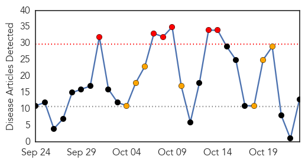

Hepatitis
30-Day Web Trend
4 alerts, 1 warnings

30-Day Twitter Trend
0 alerts, 0 warnings

Article Locations

Article Confidences

Top Articles:
- 0.967
- 2 more patients test positive for hep C, Health News & Top Stories
- 0.962
- Vaccinations aren’t just for kids
- 0.836
- Doctors are failing spreading the HPV vaccine, Research says
- 0.609
- Sdp calls for release of emails regarding hep c outbreak !
- 0.554
- Cuban HB vaccine undergoes trials in eight countries
- 0.547
- Cuban HB vaccine undergoes trials in eight countries
- 0.540
- Typhoid not on Fomema checklist
- 0.532
- Doctors, Not Parents, Are The Biggest Obstacle To The HPV Vaccine
Top Tweets:
-
No tweets found for Oct 23, 2015
Influenza
30-Day Web Trend
6 alerts, 7 warnings

30-Day Twitter Trend
0 alerts, 0 warnings

Article Locations

Article Confidences

Top Articles:
- 0.999
- 6,000 reported flu cases a year in T&T
- 0.984
- Fend off the flu
- 0.944
- Flu shot season kicks off in Chapel Hill
- 0.890
- Vaccinating Children May be Cost-Effective for Tackling Flu
- 0.871
- Drug made from bananas can kill viruses including hepatitis C and flu
- 0.847
- Could bananas cure AIDS? New drug made from the fruit can kill viruses including hepatitis C and flu
- 0.783
- Today's stories from newspapers in Norfolk County
- 0.783
- Today's stories from newspapers in Norfolk County
- 0.760
- Deadly Bird Flu Flying South for Winter
- 0.657
- Equine flu outbreak is over, say Malaysian officials
- 0.525
- The Raging Health Care War
- 0.520
- Bird Flu Cases Found in Taiwan Abattoir
- 0.519
- Drug from banana protein could help fight AIDS, Hepatitis C and influenza viruses
Top Tweets:
-
No tweets found for Oct 23, 2015